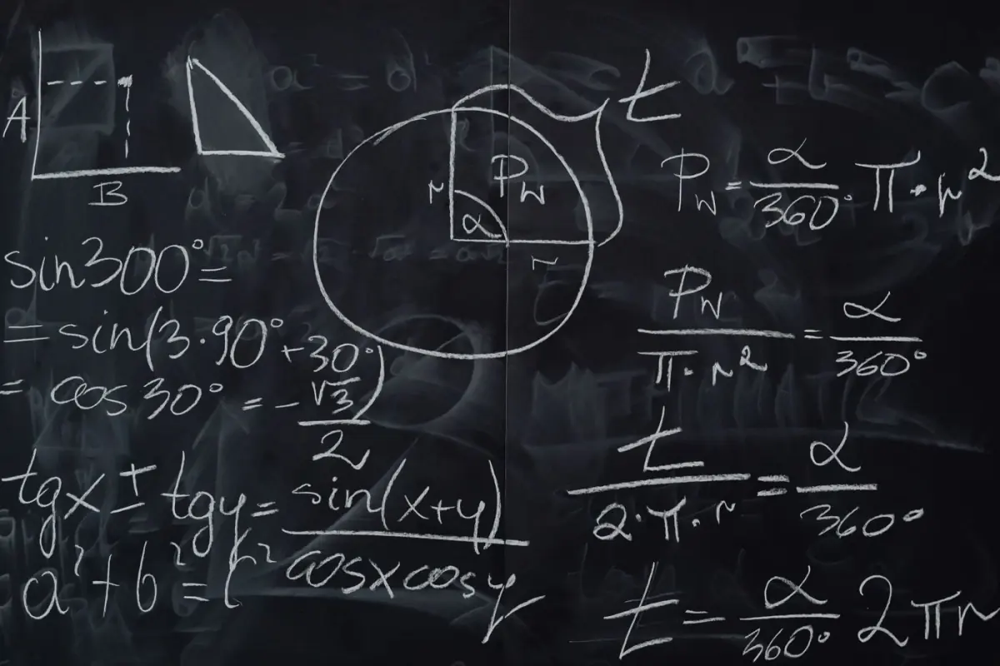
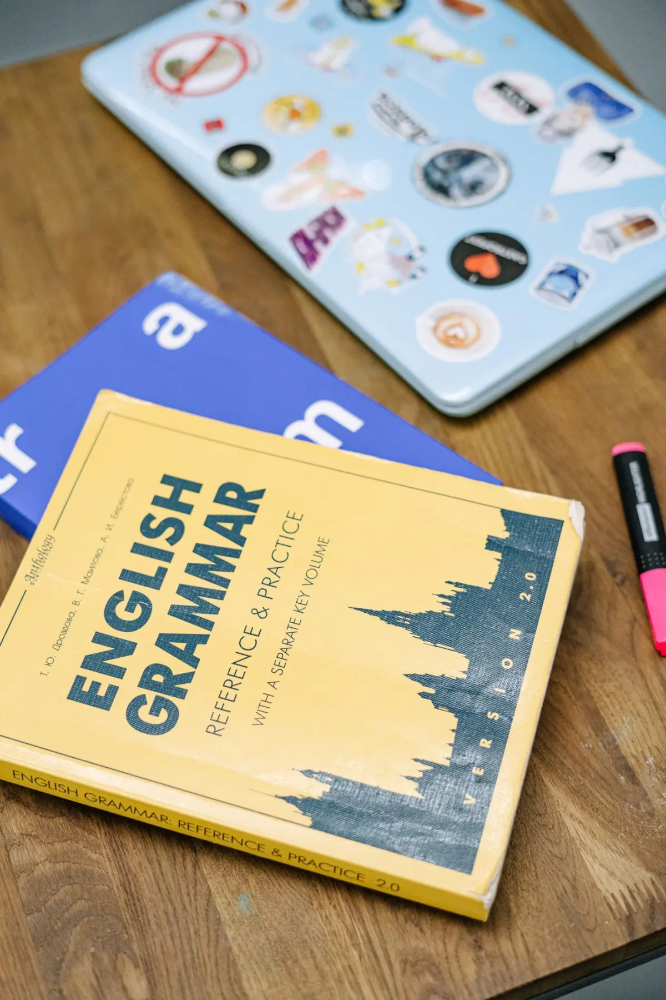
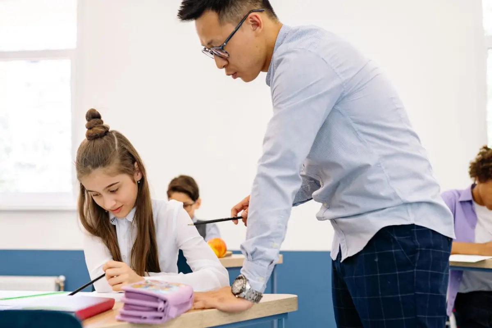

Free diagnostic check
A relaxed 45-minute session to see what your child has already mastered and where the gaps really are.
A little guidance. A world of possibility.
After-school tutoring for Classes 1–12, online or at our centre.
Small batches, expert tutors, and a plan built around your child.

Free first class
No obligationHow tutoring works
You never have to guess what happens next. Here is exactly how a student joins and progresses with us.
A relaxed 45-minute session to see what your child has already mastered and where the gaps really are.
We map a week-by-week plan against your school syllabus and share it with you before the first class.
Eight to ten students per batch, so every hand goes up and every question gets an answer.
Fortnightly checkpoint tests, marked papers and a written progress report sent to parents.
Online or in person
Same tutors, same material, same progress reports — choose whichever suits your family, or mix the two.
At our centre
Fixed evening batches near you, with a quiet library and doubt counters open before and after class.
From home
The same small batch on video, with a shared whiteboard and every session recorded for revision.
Subjects & classes
Every subject runs at four levels, matched to your school board and your child’s current class.

Arithmetic and tables through to algebra, geometry, trigonometry and calculus.
Diagrams, equations and experiments explained with everyday examples you will not forget.

Comprehension, grammar, essay structure and the confidence to speak up in class.
Timelines, maps and answer structures that earn full marks in board papers.
24 tutors · average 9 years teaching
Every tutor is subject-qualified, police-verified and observed in class each term.
Confidence beyond the classroom
“For the first time, I’m raising my hand in maths class. The small batches make it easy to ask every question.”
“We’ve seen a real change in how our son approaches homework. He is more independent and much more confident.”
“My daughter looks forward to her classes. The regular updates help us see exactly where she is improving.”
Enquire or book
Tell us your child’s class and subject. We will suggest a batch, introduce the tutor, and you decide afterwards — no deposit, no commitment.
